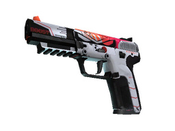
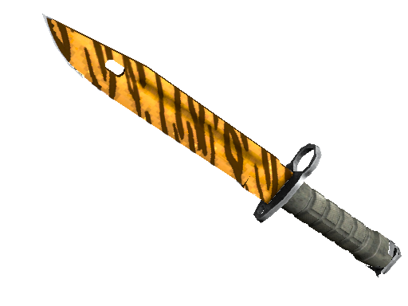

Skins (Peles)
Skins são uma espécie de revestimento ou pintura para as armas do jogo. Váriam de skins de armas para skins de agentes, facas e luvas.
Nas skins existem raridades, que são:
- Consumer
- Industrial
- Mil-spec
- Restricted
- Classified
- Covert
- Knifes and Gloves
- Contraband
Entre essas raridades, algumas não podem ser dropadas em caixas, somente em skins de coleções que são o caso da raridade Consumer e Industrial. Contraband é uma raridade excêntrica pois ela não é mais dropada de nenhuma maneira por violação de direitos autorais que é o caso da M4A4 | Howl.
Aqui estão alguns exemplos de skins destas raridades citadas, algumas destas skins só existe uma como por exemplo a M4A4 Uivo:
 Five-Seven Protocolo de Impulso

AK-47 Piloto Neon
 Baioneta (★) Dente de Tigre

Luvas de Especialista (★) Degradê

M4A4 Uivo
Clicando em cada uma das skins mencionadas você é redirecionado para página de venda oficial da Steam.